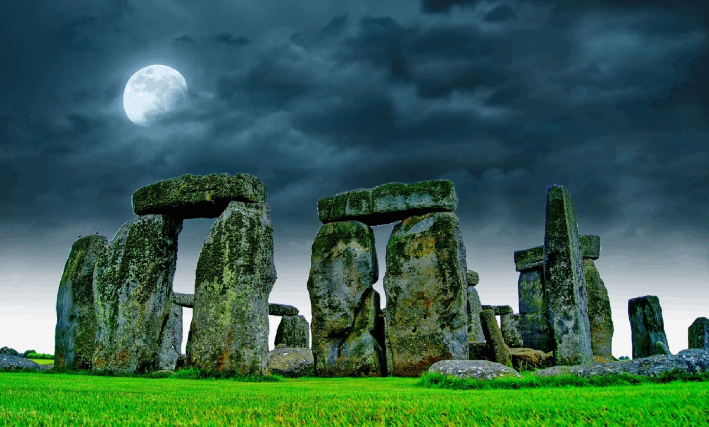

Option 1 · Megalith by Night
Stars over standing stone
A dark hearth: ink-blue night (not neon purple), pale moonlight, standing stone under cloud. Quiet fabulousness - campfire gold as the only warm spark.
Atmosphere photo
Public-domain Stonehenge under a moonlit sky. Full-bleed hero plane on the live site; shown here as the visual anchor for this option.

Three pillars of the look
Hero plane, deep page wash, hush.
Weight, footers, gathering practicals.
Primary CTA and Circle accent only.
Mark
Moon-circle emblem: nested trilithons under a crescent, star gold on night plum. Site favicon and apple touch icon. Keep the circle intact - do not crop to a square stone crop.
 128
64
128
64
assets/sarsen/favicon.svg- primary faviconassets/sarsen/favicon.ico- legacy fallbackassets/sarsen/apple-touch-icon.png- 180px home-screenassets/sarsen/mark-moon-circle.png- 512px master raster
Colour
Ink and night blue, not purple glow stacks. Star cream for type. Ember gold used sparingly like a distant fire.
Stone at night
Principles
- Brand first in starlight, not buried in widgets.
- Dark with kindness - body text stays large and pale.
- No neon haze - skip purple glow and sparkle emoji.
- Moon-circle mark - nested trilithons under crescent; use as favicon and brand badge.
- Circles - deeper void, gold accent, calmer motion.
Typography
Syne for brand and headlines - modern, slightly odd under the stars. Figtree for body.
Albion Faeries
the circle holds after the light goes
The Albion Faeries are part of the global Radical Faerie web - awakening, nature-loving, compassionate queers finding each other in old Albion and beyond.
Components
Albion Faeries
What's on · Gatherings · Who we are · Get involved
Circles · Albion
Void panels, star-gold accent, almost no motion.
Voice
Say
- "Come along to a circle or gathering."
- "What's glowing this moon."
- "Open actions from the last Comms moot."
Avoid
- Gothic cosplay voice
- Purple "mystic UI" jargon
- Gatekeepy night-club energy